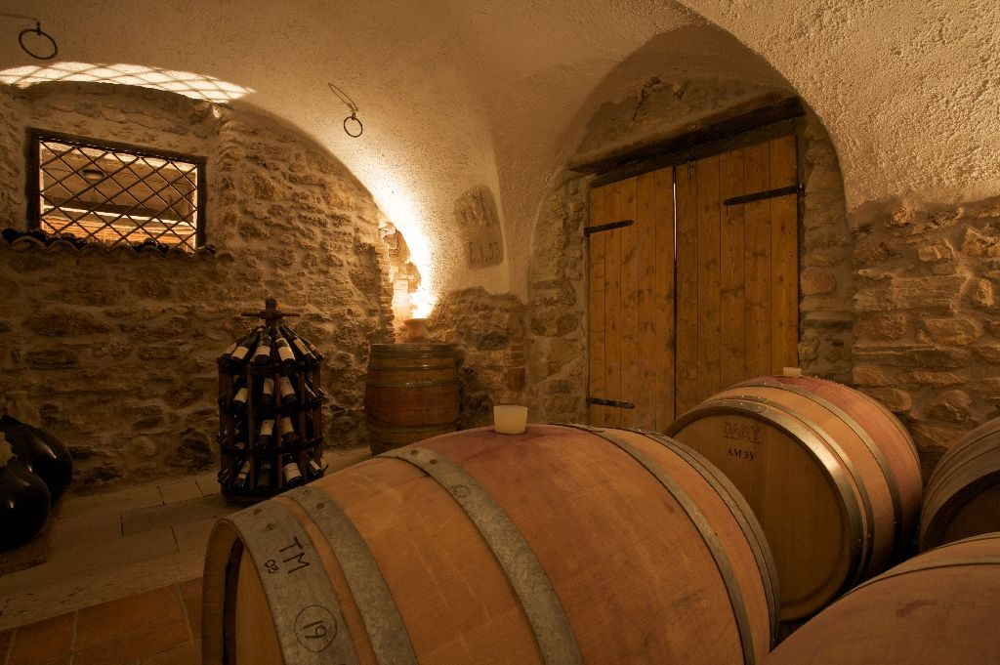
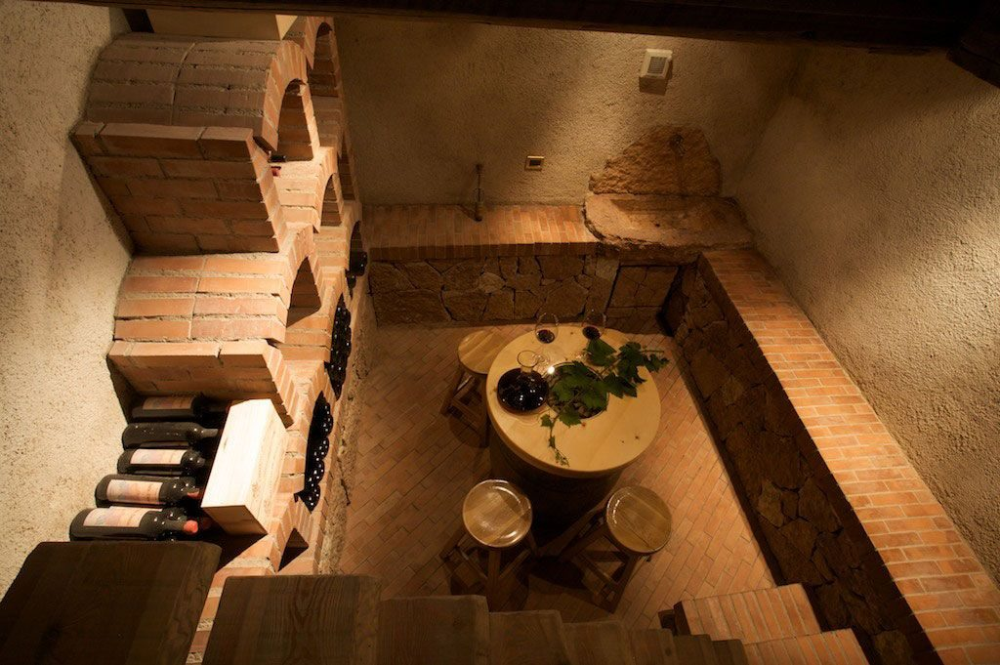
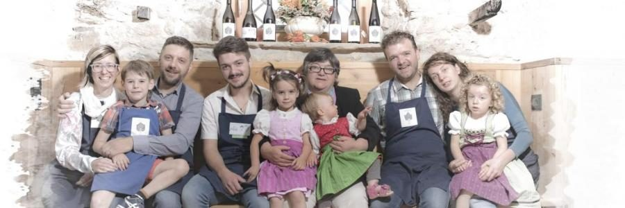

La cantina
Costruendo la cantina abbiamo voluto tenere intatti i tratti storici del maso. La sala di lavorazione delle uve è nella vecchia stalla di famiglia, rimasta attiva fino al 1986.
La sala degustazione sta nell'antica cantina: la vecchia porta ha ancora sul legno le tracce degli anni, la finestra le inferriate originali, e un'antica scritta sul muro resiste a ogni tentativo di coprirla.

La Caneva Fonda
La stanza dei ricordi: un piccolo antro sotterraneo in fondo a una ripida scala. Nata come ghiacciaia, poi cambusa per i salumi e le provviste, oggi è il luogo della convivialità, dove il vino fa riscoprire l'amicizia e la compagnia.

La famiglia
- Devis CobelliTecnico agrario, diplomato a San Michele all'Adige: segue la parte commerciale e quella conviviale, per passione.
- Tiziano CobelliL'enologo di casa: oltre alla campagna, ha in mano tutta la gestione dei vini.
- Ivano CobelliEnotecnico, diplomato a San Michele all'Adige: l'anima più giovane dell'azienda.
Al maso, sopra Lavis
Maso Panizza di Sopra, Strada del Vino 22
loc. Sorni di Lavis (TN)
cell. 331 967 2482 · info@cobelli.it
